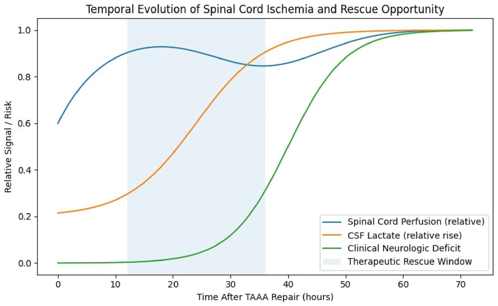
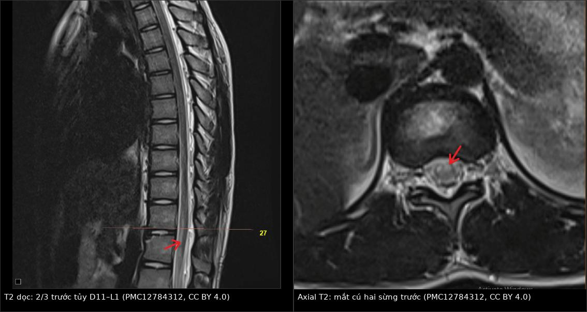
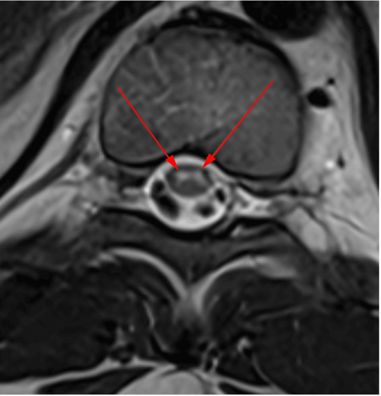
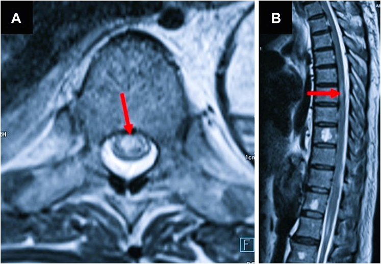
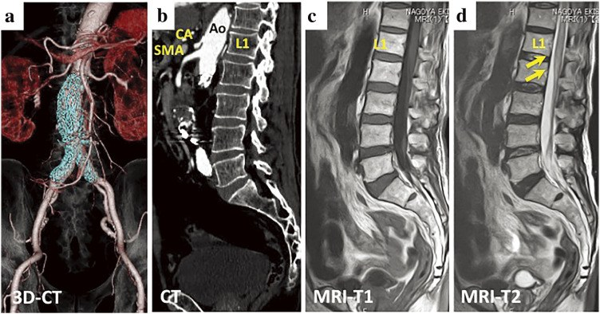
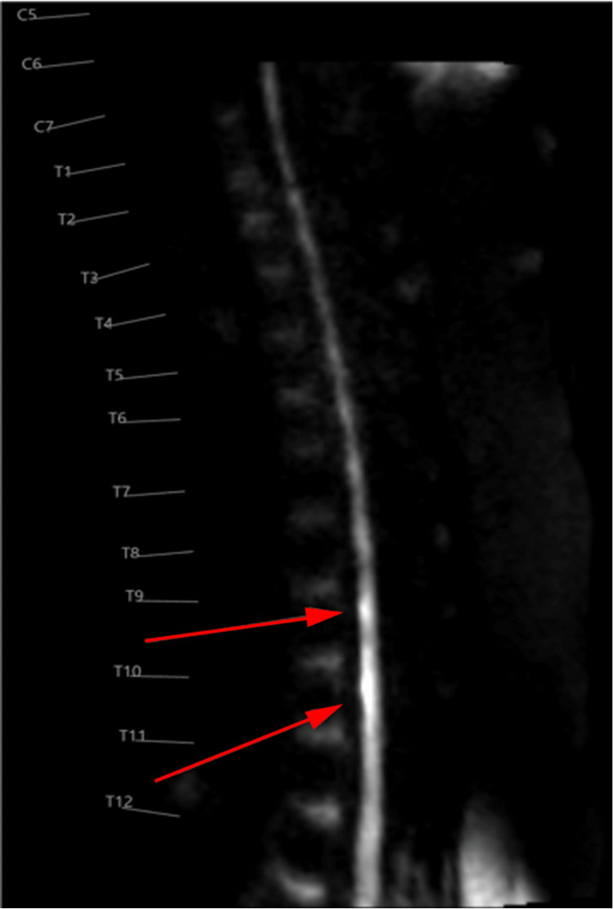

256 — Nhồi máu tủy sau phẫu thuật/đặt stent động mạch chủ: động mạch Adamkiewicz & dấu "mắt cú"
Tags: pattern:nhoi-mau-tuy pattern:owl-eye pattern:han-che-khuech-tan pattern:tuoi-mau-doc-truc pattern:lien-tuy-chien vung:tuy-nguc vung:tuy-that-lung protocol:MRI-tuy-DWI protocol:CTA-dong-mach-chu score:ASIA score:Crawford score:mRS
Mức chắc chắn (certainty): tổng hợp y văn (literature synthesis) — 1 tổng quan thuật toán (Neurol Int 2026, PMC13516104), 1 tổng quan hệ thống (umbrella review, Brain Sci 2025, PMC12025544), 1 nghiên cứu giải phẫu 102 tử thi + 101 chụp mạch (PMC13002190), 1 phân tích gộp chẩn đoán/tiên lượng (PMC11450783), 2 ca nguyên văn sau can thiệp ĐMC có ảnh (PMC12539470; PMC11444833) và 2 ca nguyên văn có ảnh DWI/T2 (PMC12784312; PMC12915697). Không có thử nghiệm ngẫu nhiên; mọi ngưỡng xử trí là tổng hợp thực hành, chỗ suy luận được ghi rõ.
Câu chốt: nhồi máu tủy sau mổ/đặt stent ĐMC là biến chứng của "cắt máu nuôi" chứ không phải của gây mê: động mạch Adamkiewicz (artery of Adamkiewicz, AKA) cấp máu cho 2/3 trước tủy, nằm bên trái 74%, hay xuất phát T9 (rồi T10, L1), đường kính chỉ 0,75–0,88 mm. Ba câu để không bỏ sót: (1) liệt mềm + mất cảm giác đau/nhiệt dưới một mức, giữ cảm giác sâu = lãnh thổ động mạch tủy trước; (2) DWI hạn chế + ADC thấp là dấu sớm nhất, T2 có thể bình thường trong giờ đầu; (3) axial hai chấm sáng ở sừng trước ("owl's eyes") rất gợi ý nhưng không đặc hiệu — phải loại máu tụ ngoài/trong màng cứng sau dẫn lưu DNT trước khi tăng dẫn lưu.
1. Tổng quan bệnh học – cơ chế hình ảnh (TẠI SAO)
1.1 Giải phẫu: một "ống tưới" hẹp, phụ thuộc vài nhánh
- Động mạch tủy trước (anterior spinal artery, ASA) chạy dọc mặt trước tủy, cấp máu 2/3 trước (sừng trước, bó tháp, bó gai–đồi thị); động mạch tủy sau (posterior spinal artery, PSA) cấp 1/3 sau (bó sau, cảm giác sâu). ASA mảnh và chỉ được tăng cường bởi các động mạch tủy–rễ trước (anterior radiculomedullary arteries, ARM) xuất phát từ động mạch liên sườn/thắt lưng — nhánh của ĐMC (PMC13516104).
- AKA là ARM lớn nhất vùng ngực–thắt lưng, có quai kẹp tóc (hairpin) trước khi nối ASA. Nghiên cứu 102 tử thi + 101 chụp mạch: AKA bên trái 75/102 (74%); hay nhất T9 (20/102), rồi T10 (20) và L1 (19); trên chụp mạch T9 25/99 (25,3%), T10 22/99 (22,2%); đường kính 0,75 ± 0,3 mm tại màng cứng và 0,88 ± 0,1 mm tại chỗ nối ASA; góc quai 110,8° ± 45° (PMC13002190).
- Vì sao vùng ngực–thắt lưng dễ tổn thương: đây là vùng chuyển tiếp giữa nguồn cấp cổ–ngực trên và nguồn cấp thắt lưng; ASA mảnh (đường kính 0,51 mm đoạn trên chỗ nối, 0,64 mm đoạn dưới) nên một nhánh bị che/tắc là đủ gây thiếu máu lan rộng (PMC13002190). Vùng watershed giữa các nhánh sulcal và bờ là nơi nhạy nhất với tụt huyết áp.
1.2 Cơ chế sau mổ/đặt stent ĐMC
- Mổ hở: kẹp ĐMC làm giảm tưới máu tủy; cắt/tái tạo các động mạch liên sườn–thắt lưng làm mất nhánh nuôi; tụt huyết áp và thiếu máu làm nặng thêm (PMC13516104).
- Nội mạch (TEVAR/EVAR/FEVAR): che lỗ các động mạch liên sườn (đặc biệt khi vùng hạ cánh dài), bong mảng xơ vữa do dây/dụng cụ, huyết khối từ túi phình, và tụt huyết áp chu phẫu (PMC13516104; PMC12539470).
- Hai pha: pha giảm tưới máu (có thể hồi phục nếu sửa ngay) → pha thứ phát với phù tủy, rối loạn vi mạch, phá vỡ hàng rào máu–tủy, cytokine/oxy hóa (PMC13516104). Vì vậy cửa sổ cứu không chỉ trong phòng mổ: 24–72 giờ đầu vẫn có thể xuất hiện liệt muộn.
- Vì sao EVAR dưới thận vẫn gây nhồi máu: dù stent nằm dưới động mạch thận, việc bít động mạch mạc treo tràng dưới (IMA) và các động mạch thắt lưng làm mất tuần hoàn bàng hệ cấp cho đoạn tủy dưới; nếu AKA xuất phát cao (L1/L2) hoặc bàng hệ kém → thiếu máu (PMC11444833).
1.3 TẠI SAO nhìn thấy trên MRI: phù độc tế bào → DWI trước, T2 sau
- Thiếu máu → mất ATP → bơm Na⁺/K⁺ hỏng → nước vào tế bào (phù độc tế bào) → nước bị hạn chế khuếch tán → DWI sáng, ADC thấp. Dấu này xuất hiện sớm, trước khi T2 đủ sáng để thấy.
- T2 tăng tín hiệu khi nước ngoại bào/tự do tăng (phù vận mạch, hoại tử) — thường muộn hơn DWI; vì vậy MRI sớm có thể âm (PMC11450783).
- Phân bố "2/3 trước": tổn thương tăng T2 hình bút chì ở phần trước tủy trên sagittal, giữ nguyên cột sau (PSA) — dấu rất gợi ý lãnh thổ ASA.
- "Owl's eyes" (mắt cú): trên axial, hai chấm sáng đối xứng ở sừng trước — vì sừng trước là chất xám vận động, chuyển hóa cao, nằm trong vùng nhánh sulcal tận cùng của ASA; tổn thương hai bên tạo hình hai mắt. Tần suất: 39,6% ở cổ, 22,9% ở ngực (p = 0,031) (PMC11450783).

Sơ đồ khái niệm: tưới máu tủy giảm → lactate DNT tăng → triệu chứng thần kinh xuất hiện muộn hơn; vùng xanh là cửa sổ cứu (theo mô hình của tác giả, trục tung là tín hiệu tương đối, không phải giá trị tuyệt đối). Nguồn: Neurol Int 2026 (PMC13516104), CC BY 4.0.1.4 Ngưỡng định lượng trụ cột
| Đại lượng | Con số | Nguồn |
|---|---|---|
| Nhồi máu tủy nói chung | 0,3–1% đột quỵ; 6% myelopathy cấp; 3,1/100.000 người–năm (quần thể) | PMC11450783; PMC13653364 |
| Sau mổ ĐMC hở / nội mạch | ~10% / ~3,5%; 7,4% vs 13,5% (TAAA); tổn thương vĩnh viễn 3,3% (4% mổ hở, 2,9% nội mạch) | PMC12025544 |
| Theo Crawford (vĩnh viễn) | I 3,8% · II 13,4% · III 7,1% · IV 2,3% · V 6,7% | PMC12025544 |
| TEVAR | vĩnh viễn 2,0% (22 nghiên cứu/1.479 ca); tạm thời 1,0% (24 nghiên cứu/2.048 ca) | PMC12025544 |
| EVAR dưới thận | 0,21–0,64%; mổ hở AAA 0,1–1,4% | PMC11444833 |
| Liệt muộn | 1–12%; thường trong 24–72 giờ | PMC12025544; PMC13516104 |
| Đáp ứng theo bậc | Chia 2 thì: SCI 9% vs 18% (p = 0,02) | PMC12025544 |
| Thời gian tới đỉnh triệu chứng | **< 6 giờ: 56,1%**; 6–12 giờ: 30,7%; 12–72 giờ: 5,4%; > 72 giờ: 7,8% | PMC11450783 |
| DWI ở giai đoạn tối cấp | AUC 0,835 cho phát hiện T2 tăng tín hiệu khi đỉnh < 6 giờ | PMC11450783 |
| Kết cục | mRS 3 (2–3) lúc nhập → 1 (1–2) sau 12 tháng; 68,9% điều trị nội + PHCN, 22,8% mổ giải ép | PMC11450783 |
| Giải phẫu AKA | Trái 74%; T9 20/102, T10 20, L1 19; 0,75 ± 0,3 mm tại màng cứng, 0,88 ± 0,1 mm tại ASA | PMC13002190 |
| Dẫn lưu DNT dự phòng | NNT 10 (giảm 10% nguy cơ liệt); đích < 10 mmHg | PMC12025544 |
| Tốc độ dẫn lưu | 5–15 mL/giờ, tối đa 20 mL/giờ trong mổ; sau mổ ≤ 10 mL/giờ | PMC12025544 |
| Biến chứng dẫn lưu DNT | Chung 13,6%; nặng 1,95%; tử vong tới 1,4–1,9% | PMC12025544 |
2. Mẫu hình + chẩn đoán phân biệt theo vị trí (Gamut)
Mẫu hình chốt: bệnh nhân vừa mổ/đặt stent ĐMC, thức dậy hoặc trong 24–72 giờ có liệt mềm hai chân, mất cảm giác đau/nhiệt dưới một mức, giữ cảm giác sâu, rối loạn cơ tròn; MRI có T2 tăng 2/3 trước tủy ± DWI hạn chế ± owl's eyes; đã loại trừ máu tụ/chèn ép.
2.1 Gamut theo vùng tủy
| Vùng tổn thương | Thực thể | Vì sao khác nhau |
|---|---|---|
| 2/3 trước, dọc dài | Nhồi máu ASA sau mổ ĐMC; xơ vữa/emboli từ ĐMC; FCE; hạ huyết áp | Mất vận động + đau/nhiệt, giữ cảm giác sâu; DWI hạn chế |
| 1/3 sau | Nhồi máu PSA (hiếm) | Mất cảm giác sâu/rung, đau/nhiệt còn; thường do nhánh sau |
| Trung tâm, dọc dài | NMO/MOGAD, viêm tủy ngang, SDAVF | Không theo lãnh thổ mạch; NMO-IgG/MOG-IgG, dịch não tủy, flow void |
| Ngoài tủy, chèn ép | Máu tụ ngoài/trong màng cứng sau dẫn lưu DNT, áp-xe, di lệch dụng cụ | Có hiệu ứng khối, màng cứng căng; mổ/dẫn lưu cấp |
| Chất xám sừng trước hai bên | Nhồi máu ASA, FCE, surfer's myelopathy | Owl's eyes — không đặc hiệu cho một nguyên nhân |
| Tủy teo, tín hiệu mạn | Myelomalacia sau chấn thương/nhồi máu cũ | Không hạn chế khuếch tán; teo + tăng T2 |
2.2 Mnemonic CORD (đọc ca liệt sau mổ ĐMC)
- C — Cấp: liệt mềm, mất cảm giác đau/nhiệt, giữ cảm giác sâu → lãnh thổ ASA.
- O — Owl's eyes: hai chấm sáng sừng trước trên axial T2 = chất xám chịu thiếu máu.
- R — Restricted diffusion: DWI sáng/ADC thấp, có thể dương trước T2.
- D — Drain/compression: luôn loại máu tụ sau dẫn lưu DNT và chèn ép trước khi kết luận "nhồi máu".
3. Bảng so sánh phân biệt (ma trận đối chiếu)
| Thực thể (entity) | Hình ảnh điển hình | Chốt vào (rule-in) | Chốt loại (rule-out) | Gợi ý xác nhận |
|---|---|---|---|---|
| Nhồi máu tủy sau mổ ĐMC | T2 tăng 2/3 trước tủy theo trục dọc, DWI hạn chế/ADC thấp, ± owl's eyes; không hiệu ứng khối | Mới mổ/stent ĐMC + liệt mềm cấp + DWI hạn chế đúng lãnh thổ ASA | Có khối/máu tụ chèn ép, tủy bị đẩy → không phải nguyên nhân chính | MRI tủy + DWI/ADC; CTA ĐMC |
| Máu tụ ngoài/trong màng cứng sau dẫn lưu DNT | Khối hình thấu kính/bầu dục trong ống sống, chèn ép tủy, tín hiệu máu theo tuổi | Đau lưng cấp sau đặt catheter + yếu chi + MRI có khối | Không khối, tủy không bị đẩy → nghĩ nhồi máu | MRI cấp/CT tủy; mổ giải ép |
| Chèn ép do dụng cụ/di lệch | Dụng cụ/đĩa/mảnh xương chèn vào ống sống, tủy biến dạng | Thấy điểm chèn ép + phù tủy khu trú | Tổn thương đối xứng 2/3 trước, không chèn ép → nhồi máu | CT xoay dụng cụ; MRI |
| Rò động–tĩnh mạch màng cứng (SDAVF) | Phù tủy lan dài, flow void mặt lưng, giãn tĩnh mềm, ngấm màng | Flow void + phù lan + tiến triển nhiều tuần | Khởi phát cấp sau mổ + DWI hạn chế → nhồi máu | MRA/CTA; DSA |
| NMO/MOGAD | Tổn thương trung tâm, dọc ≥ 3 đốt, có thể owl's eyes, ngấm thuốc | NMO-IgG/MOG-IgG dương + viêm dây thần kinh thị + dọc dài | Không kháng thể, đúng lãnh thổ mạch, DWI rõ → nhồi máu | Xét nghiệm huyết thanh/DNT; MRI sọ |
| Viêm tủy ngang | T2 tăng trung tâm/lan, phù, ngấm thuốc; dịch não tủy tăng tế bào/protein | Dịch não tủy viêm + khởi phát bán cấp | Dịch não tủy bình thường + DWI hạn chế → nhồi máu | Chọc dò; MRI; PCR |
| FCE (fibrocartilaginous embolism) | Owl's eyes + T2 trước tủy sau gắng sức/chấn thương nhẹ | Tiền sử gắng sức + đau lưng đột ngột + hình ảnh ASA | Có bệnh ĐMC/mổ ĐMC + tụt HA → nghĩ nhồi máu do mổ | MRI; loại trừ nguyên nhân khác |
| Thiếu máu vùng watershed do tụt HA | Tổn thương đối xứng vùng chuyển tiếp, có thể nhiều ổ | Tụt HA kéo dài + tổn thương đối xứng | Một vùng lãnh thổ ASA rõ + mạch bị che → nhồi máu do mạch | Theo dõi HA; MRI lặp |

Trái: T2 sagittal — tăng tín hiệu 2/3 trước tủy từ D11 đến L1 (mũi tên đỏ). Phải: axial T2 cùng bệnh nhân — hai chấm sáng ở sừng trước ("owl's eyes", mũi tên đỏ), cột sau còn tối. Nguồn: Cureus 2025 (PMC12784312), CC BY 4.0. Ảnh ghép letterbox, không crop.3.1 Ba dấu hiệu cần đọc kỹ
- DWI/ADC: đặt ROI ở tủy lành trên/dưới và vùng tổn thương; ADC thấp hơn tủy lành + DWI sáng = hạn chế khuếch tán thật. Không dựa vào DWI một mình nếu ảnh nhiễu do chuyển động/dị vật kim loại.
- T2 axial "owl's eyes": hai chấm sáng đối xứng ở sừng trước, không lan ra cột sau; nếu tổn thương tròn, trung tâm, lan toàn bộ → nghĩ viêm tủy/NMO, không phải nhồi máu.
- Sagittal "pencil-like": đo số đốt bị ảnh hưởng và mức trên–dưới; ghi mức đốt (D11–L1, T8–T12...) để đối chiếu vùng phủ stent và mức AKA.

Axial T2 tủy ngực: hai ổ tăng tín hiệu đối xứng ở sừng trước (mũi tên đỏ) — "owl's eyes". Dấu này gợi ý nhồi máu ASA nhưng cũng gặp trong FCE, surfer's myelopathy, và một số thể viêm tủy. Nguồn: Cureus 2026 (PMC12915697), CC BY 4.0.4. Protocol chụp + hệ phân độ/điểm chuẩn hóa
4.1 Protocol theo tình huống
| Tình huống | Chuỗi bắt buộc | Mục đích |
|---|---|---|
| Liệt mới sau mổ/stent ĐMC | MRI toàn bộ tủy cấp: sagittal T2 + STIR, axial T2 tại mức tổn thương, DWI (b = 1.000) + ADC, T1 ± gadolinium | Xác định lãnh thổ ASA, hạn chế khuếch tán, loại chèn ép/máu tụ |
| MRI âm nhưng nghi cao | Lặp MRI sau 24–48 giờ; CT tủy nếu không chụp MRI được | T2 có thể âm sớm; DWI nhạy hơn nhưng không hoàn hảo (AUC 0,835 < 6 giờ) |
| Chưa có CTA ĐMC | CTA ngực–bụng–chậu: đánh giá vùng phủ stent, động mạch liên sườn/thắt lưng, AKA nếu thấy | Tìm mạch bị che/tắc, bóc tách, huyết khối, emboli |
| Trước mổ TAAA nguy cơ cao | CTA/MRA xác định AKA (thường T9–T12 bên trái), đánh giá tuần hoàn bàng hệ | Lập kế hoạch tái tạo nhánh, stent có cửa sổ, chia thì |
| Theo dõi hậu phẫu | Khám thần kinh mỗi 2–4 giờ trong 48–72 giờ; MEP/SSEP trong mổ; NIRS/lactate DNT chỉ nghiên cứu | Phát hiện liệt muộn trong cửa sổ cứu |
4.2 Hệ phân độ/điểm thực hành
- Crawford I–V cho TAAA: nguy cơ tổn thương vĩnh viễn tăng theo độ rộng: I 3,8%, II 13,4%, III 7,1%, IV 2,3%, V 6,7% (PMC12025544). Dùng để tư vấn trước mổ và chọn mức độ theo dõi.
- ASIA Impairment Scale (A–E): phân độ vận động/cảm giác sau tổn thương tủy; ASIA A = mất hoàn toàn vận động và cảm giác dưới mức. Dùng để theo dõi hồi phục, không dùng để chọn can thiệp.
- mRS: kết cục chức năng; phân tích gộp cho thấy mRS 3 → 1 sau 12 tháng ở nhồi máu tủy nói chung (PMC11450783) — đừng tiên lượng tử vong/không hồi phục ngay.
- Không có RADS riêng cho nhồi máu tủy.
4.3 Flowchart xử trí
flowchart TD
A[Liệt mới sau mổ hoặc stent ĐMC] --> B[Khám: mức cảm giác, vận động, cơ tròn]
B --> C[Đo MAP, Hb, kiểm tra catheter dẫn lưu DNT]
C --> D{Mất đau nhiệt + liệt mềm?}
D -->|Không| E[Theo dõi sát mỗi 2-4 giờ]
D -->|Có| F[MRI tủy cấp: T2 STIR + axial T2 + DWI ADC]
F --> G{Có khối chèn ép hoặc máu tụ?}
G -->|Có| H[Mổ giải ép hoặc dẫn lưu khẩn]
G -->|Không| I{ADC thấp + T2 sáng 2/3 trước tủy?}
I -->|Không| J[Loại trừ viêm tủy, NMO, MOG, SDAVF]
I -->|Có| K[Nhồi máu tủy lãnh thổ ASA]
K --> L[Nâng MAP 85-90 mmHg; Hb trên 10 g/dL]
L --> M[Dẫn lưu DNT: đích dưới 10 mmHg, 5-15 mL mỗi giờ]
M --> N{Cải thiện trong 24-48 giờ?}
N -->|Có| O[Tiếp tục 48-72 giờ + phục hồi chức năng]
N -->|Không| P[Xem lại mạch: CTA hoặc DSA; cân nhắc can thiệp]
- Mục tiêu huyết động: MAP 80–90 mmHg (nhiều chương trình 85–90 mmHg trong 48–72 giờ đầu); Hb > 10 g/dL; tránh hạ huyết áp và thuốc hạ áp (PMC12025544; PMC13516104).
- Dẫn lưu DNT: dự phòng đích < 10 mmHg; 5–15 mL/giờ, tối đa 20 mL/giờ trong mổ, ≤ 10 mL/giờ sau mổ; NNT 10 cho mổ hở (PMC12025544). Không dẫn lưu mù khi chưa loại máu tụ.
- Cứu nguy: tăng MAP + dẫn lưu DNT + ngừng thuốc hạ áp; steroid/naloxone/edaravone được dùng trong ca nguyên văn nhưng không có bằng chứng mạnh, không thay thế tái tưới máu/tăng áp lực tưới (PMC11444833).

Bệnh nhân 58 tuổi sau TEVAR đoạn ngực T6–T12: (A) axial T2 — tăng tín hiệu sừng trước hai bên; (B) sagittal T2 — tăng tín hiệu tủy ngực giữa. Dẫn lưu DNT bắt đầu trong 24 giờ, đích < 10 mmHg**, tốc độ **15 mL/giờ** trong **48 giờ**; **MAP ~100 mmHg**, **Hb > 10 g/dL; sau 3 tháng đi lại có hỗ trợ. Nguồn: JACC Case Rep 2025 (PMC12539470), CC BY-NC-ND 4.0 (nguyên bản).5. Biến thể bình thường và cạm bẫy
5.1 Biến thể/dấu hiệu dễ đọc quá
- Tăng tín hiệu nhẹ trung tâm do hiệu ứng thể tích từ dịch não tủy/dây thần kinh — so axial và ADC, không chẩn đoán trên một lát sagittal.
- Giãn ống trung tâm nhỏ ở người trẻ là bình thường, không hạn chế khuếch tán.
- Owl's eyes có thể gặp trong FCE và surfer's myelopathy — hình ảnh không cho nguyên nhân, bối cảnh quyết định.
5.2 Cạm bẫy (pitfall)
- "MRI sớm bình thường = không nhồi máu" — SAI. T2 có thể âm trong giờ đầu; DWI AUC 0,835 ở < 6 giờ (PMC11450783). Nghi cao → lặp MRI 24–48 giờ.
- Tăng dẫn lưu DNT khi chưa loại máu tụ — máu tụ ngoài/trong màng cứng sau đặt catheter có thể gây liệt giống hệt; tăng dẫn lưu làm nặng thêm. Luôn MRI/CT cấp trước.
- Nhầm với viêm tủy/NMO — tổn thương trung tâm, dọc ≥ 3 đốt, ngấm thuốc; NMO-IgG/MOG-IgG và dịch não tủy giúp phân biệt (PMC12915697).
- Bỏ sót liệt muộn — bệnh nhân ổn định khi thức dậy rồi yếu dần trong 24–72 giờ; khám thần kinh mỗi 2–4 giờ trong 48–72 giờ (PMC13516104).
- Cho rằng EVAR dưới thận "không thể" gây nhồi máu — vẫn có, 0,21–0,64%; bít IMA/động mạch thắt lưng + AKA cao/bàng hệ kém (PMC11444833).
- Quy tội cho gây mê/tụt HA đơn thuần — tụt HA là yếu tố làm nặng, nhưng che nhánh/emboli là cơ chế chính; CTA ĐMC giúp xác định.
- Không đánh giá AKA trước mổ mở rộng — AKA trái 74%, T9–T10 hay gặp; vùng phủ dài mà không tái tạo nhánh → nguy cơ cao (PMC13002190).
- Dẫn lưu DNT quá tay — biến chứng 13,6%, nặng 1,95%, tử vong 1,4–1,9%; theo dõi đau đầu, tri giác, chảy máu (PMC12025544).
- Kết luận tiên lượng ngay — mRS 3 → 1 sau 12 tháng; nhiều ca hồi phục một phần dù liệt hoàn toàn ban đầu (PMC11450783; PMC12539470).
- Bỏ sót tổn thương đôi: FCE + bóc tách động mạch liên sườn cùng lúc — nếu hình ảnh không giải thích hết, chụp mạch (PMC12784312).
6. Tự lượng giá — Blind Quiz
Ca 1 — Nam 58 tuổi, TEVAR đoạn ngực T6–T12 vì phình 6,7 cm; thức dậy liệt hai chân, mất cơ tròn. Nhìn axial và sagittal T2 trước.
- Hỏi: tổn thương ở đâu? Lãnh thổ nào? Ba việc phải làm ngay?
Bấm để hiện đáp án (findings + chẩn đoán)
- Dấu hiệu: (A) axial T2 — tăng tín hiệu hai bên sừng trước; (B) sagittal — tăng tín hiệu tủy ngực giữa; hình ảnh lãnh thổ động mạch tủy trước.
- Chẩn đoán: nhồi máu tủy sau TEVAR (che động mạch liên sườn + tụt tưới máu).
- Xử trí trong ca: dẫn lưu DNT ngay (áp lực ban đầu 22 mmHg, đích < 10 mmHg**, **15 mL/giờ** trong **48 giờ**), **MAP ~100 mmHg**, **Hb > 10 g/dL, kháng kết tập tiểu cầu đôi + phục hồi chức năng.
- Kết cục: 4 tuần sức cơ 2/5; 3 tháng 3/5; 6 tháng đi lại có hỗ trợ, còn rối loạn cơ tròn.
- Nguồn: JACC Case Rep 2025 (PMC12539470), CC BY-NC-ND 4.0.
Ca 2 — Nam 81 tuổi, EVAR cho phình ĐMC bụng 62 mm; ngay sau mổ/rút ống nội khí quản liệt hai chân + mất cảm giác đau/nhiệt. Nhìn CT và MRI trước.

- Hỏi: stent nằm dưới động mạch thận, vì sao vẫn nhồi máu? MRI thấy gì? Điều trị?
Bấm để hiện đáp án (findings + chẩn đoán)
- Dấu hiệu: (a) CT: stent-graft đặt dưới L2, lòng mạch thông, không endoleak; (b) MRI: tăng tín hiệu T2 tủy thắt lưng dưới L1 — tổn thương phần xa tủy/nón tủy.
- Vì sao: bít IMA + động mạch thắt lưng làm mất bàng hệ; AKA không thấy rõ trên CT trước/sau; AKA xuất phát L1/L2 ở một số người → thiếu máu đoạn xa.
- Điều trị: dẫn lưu DNT 3–10 cmH₂O bắt đầu 62 phút sau mổ, MAP ≥ 80 mmHg, methylprednisolone/naloxone/edaravone; hồi phục một phần gối phải, chân trái và cơ tròn không hồi phục.
- Bài học: EVAR dưới thận vẫn có SCI 0,21–0,64%; phải khám thần kinh ngay sau rút ống.
- Nguồn: Ann Vasc Dis 2024 (PMC11444833), CC BY-NC-SA 4.0 (nguyên bản).
Ca 3 — Bé gái 11 tuổi, ngã, 3 ngày sau yếu hai chân; MRI có DWI. Nhìn sagittal DWI trước.

- Hỏi: dấu hiệu trên DWI nói gì? Có loại trừ viêm tủy không? Cần làm gì thêm?
Bấm để hiện đáp án (findings + chẩn đoán)
- Dấu hiệu: DWI sagittal — hạn chế khuếch tán (tăng tín hiệu) từ T9 đến T12, tương ứng vùng tủy trước; axial T2 có owl's eyes.
- Chẩn đoán: nhồi máu tủy lãnh thổ ASA (trong ca: sau ngã, kèm gãy mỏm ngang T9–T10 và áp lực mở DNT tăng).
- Không loại trừ viêm tủy chỉ bằng DWI: cần dịch não tủy (tế bào, protein, NMO/MOG), MRI não, và loại chèn ép; DWI hạn chế ủng hộ nhồi máu nhưng không tuyệt đối.
- Bài học: ở trẻ, chấn thương nhẹ + đau lưng + liệt tiến triển vẫn có thể là nhồi máu tủy; đừng chờ "đủ tiêu chuẩn người lớn".
- Nguồn: Cureus 2026 (PMC12915697), CC BY 4.0.
Bài liên quan chéo
- 200 – Tổng quan hệ Thần kinh
- 226 – Tủy mềm không chấn thương (SDAVF, nhồi máu tủy, NMO) — hàng DDx bắt buộc
- 255 – Màng nhện lưng & dấu "scalpel" — biến dạng tủy do màng, không phải nhồi máu
- 254 – Giãn tủy sau chấn thương tủy sống — syrinx, không hạn chế khuếch tán
- 170 – Phình động mạch chủ bụng — chỉ định EVAR, biến chứng
- 172 – Theo dõi sau can thiệp bóc tách ĐMC bụng — vùng phủ stent, endoleak
- 258 – Áp-xe ngoài màng cứng & nhiễm trùng ống sống — chèn ép tủy, DDx
- 3038 – Chẩn đoán chết não — bệnh cảnh thần kinh cấp sau hồi sức
Ảnh
- Tên file:
256_*_Modality_SourceID.jpg; nguồn + giấy phép từng ảnh trongimages/CREDITS.md. images/composite_doc-va-ngang-mat-cu.jpg— ảnh ghép chỉ từ nguồn CC BY 4.0 (PMC12784312), letterbox bằngtools/make_composite.py.- Ảnh CC BY-NC-ND (PMC12539470) và CC BY-NC-SA (PMC11444833) dùng nguyên bản, không đưa vào composite, không crop.
Không dùng để chẩn đoán độc lập khi chưa có người hướng dẫn.